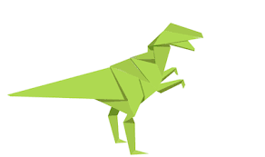
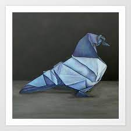
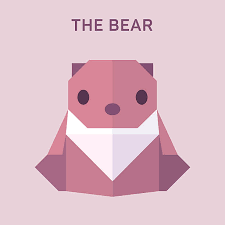
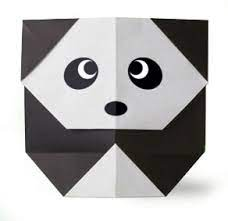
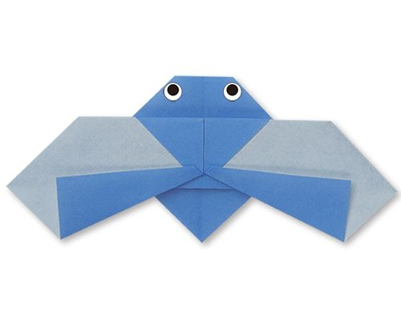

Dinosaur Origami
Intresting facts about Dinosaurs
- 1. Dinosaurs may have ended up massive, but they all came from eggs.
- 2. It’s believed that birds we see today have evolved from dinosaurs.
- 3. The heaviest and longest dinosaur ever discovered was the Argentinosaurus, which reached heights of up to 37 metres!.
- 4. A person who studies dinosaurs is called a palaeontologist.
- 5. The very biggest dinosaurs ate only plants. Those that ate meat were usually much smaller.
Dog Origami

Intresting facts about Dog
- The tallest dog in the world is 44 inches tall
- Dogs have a sense of time..
- Your dog is as smart as a two-year old!

Intresting facts about Camel
- Camel's ears are furry.
- Camel can move easily across the sand because of its specially designed feet.
- When they find water , they will drink as much as possible.
- Camels have thick lips which let them forage for thorny plants other animals can't eat.
- Camels have three sets of eyelids and two rows of eyelashes to keep sand out of their eyes.
- There are two types of camels: One humped or “dromedary” camels and two humped Bactrian camels.

Intresting facts about chameleon
- Chameleon are reptiles that are part of the iguana suboder.
- Chaning skin colour is an important part of communiction among chameleons.
- Most chameleons have a prehensile tail that they use to wrap around tree branches.
- Their feet work like salad tongs.
- Almost half of all known species live in Madagascar.
- Skin crystals enable them to change color at will.

Intresting facts about pigeon
- Pigeons are incredibly complex and intelligent animals.
- Pigeons are highly sociable animals.
- Pigeons are renowned for their outstanding navigational abilities.

Pigeons are incredibly complex and intelligent animals.
Pigeons are highly sociable animals.
Pigeons are renowned for their outstanding navigational abilities.
Intresting facts about pigeon

The term bear-hug was first recorded in 1846.
The Oxford English Dictionary dates the first use of the term teddy bear to 1906.
The Teddy Bears' Picnic song was originally called The Teddy Bear Two Step.
Intresting facts about panda

Cicadas can survive a huge fall as babies, or nymphs.
Most have red-orange eyes.
Their short adult life is not unusual for bugs.
Intresting facts about cicada